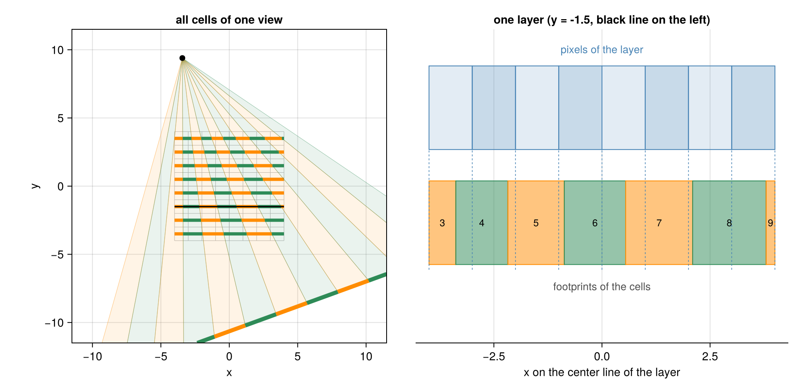
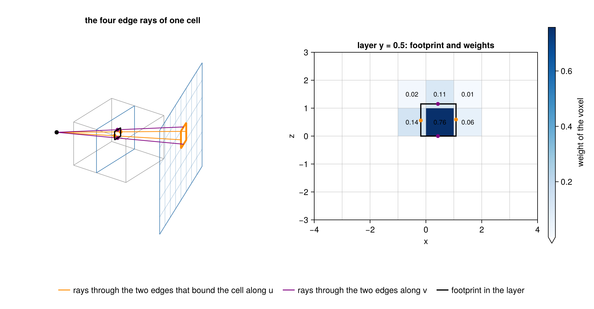
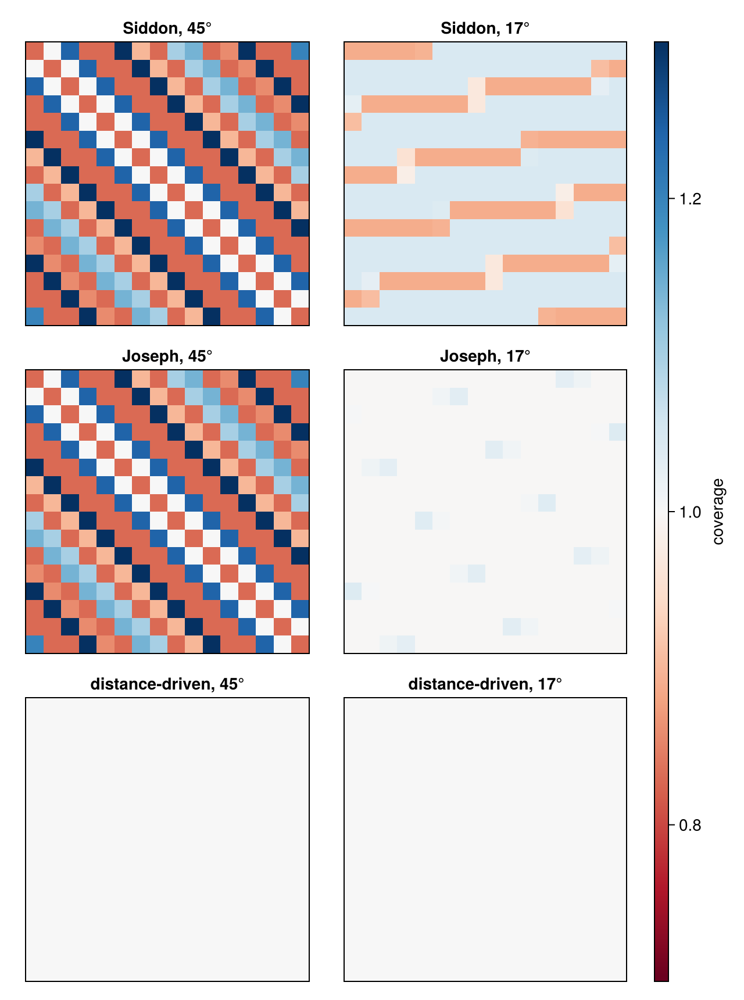

Distance-Driven Method
Siddon's Method and Joseph's Method follow one ray per detector cell, through the center of the cell. A real cell is not a point: it collects all the radiation that falls on its area. Seen from the source, a cell covers a thin beam, a wedge in 2D and a pyramid in 3D (for a parallel beam, a strip or a prism). The distance-driven method of De Man & Basu (2004) uses this beam instead of the single ray. It cuts the image into layers (see System Matrix) and lets every layer contribute the mean of the image over the part of the layer that the beam covers, the cell's footprint, times the length per layer:
\[y_i = \sum_{\text{layers } l} \ell_{i} \, \frac{1}{|F_{il}|} \int_{F_{il}} x,\]
where $F_{il}$ is the footprint of cell $i$ in layer $l$, $|F_{il}|$ its length (2D) or area (3D), and $\ell_i$ the length per layer of the ray of the cell, the ray through its center. The result is again a weighted sum of the voxel values: the weight of a voxel is the part of the footprint that lies in it, relative to the whole footprint, times $\ell_i$.
using CTOperatorsOne cell in 2D
Joseph's method chooses the principal axis per ray. The distance-driven method chooses it once per view (the projection data of one source position), from the central ray of the view, the ray from the source through the center of the detector; all cells of the view use this principal axis of the view and so the same layers.
The figure shows a fan beam (a source and a row of detector cells in a plane) with a 2D image of 8 × 8 pixels: the source (black dot), the detector (blue) and one of its cells (orange). The two rays from the source through the edges of the cell, the edge rays, bound its beam (shaded); the dotted line is the ray of the cell. The dashed lines are the center lines of the layers. On each of them, the beam covers an interval, the footprint of the cell in that layer (thick brown). The pixels are colored by their weight for this cell, taken from the package: the back projection of the value 1 in the cell. The slider rotates the scan: at 45° and at 135° the principal axis of the view changes, for all cells of the view at once.
A footprint that lies within one pixel gives that pixel the whole weight of the layer; a footprint across a pixel edge splits the weight in proportion to the parts on either side. For a footprint inside the image, the weights of a layer add up to the length per layer $\ell_i$.
Where the name comes from
Every footprint is bounded by two edge rays, and the pixels of a layer by their edges. On the center line of a layer, both kinds of boundaries are points. De Man & Basu describe the method as mapping all these boundaries onto a common line and taking weights proportional to the distances between neighboring boundaries; this gave the method its name. The figure shows all cells of one view (left, alternating colors) and one layer as a line (right): above it the pixels of the layer, below it the footprints of the cells, and the dashed pixel edges cut the footprints into the pieces that give the weights.

Neighboring cells share an edge, and so do their beams: the right edge of one footprint is the left edge of the next. Since all cells of a view use the same layers, every point of a layer that the beams of the view reach lies in exactly one footprint. The rays of a ray-driven method are lines without width; the rays of a view can pass between pixels (see Comparing Projectors).
In 3D
In 3D a cell has four edges along the detector axes u (along a detector row) and v (across the rows), and four edge rays, through the midpoints of the edges. The two through the edges that bound the cell along u give the extent of the footprint along one axis of the layer, the two through the edges along v its extent along the other one (z for a scanner that rotates about z). The footprint is the rectangle between them. The figure shows the edge rays of one cell crossing the center plane of one layer, and that plane seen along the principal axis of the view, with the weights of the voxels for this cell:

The weight of a voxel is the area of the footprint inside the voxel, relative to the area of the whole footprint, times the length per layer:
\[a_{ij} = \frac{o_b \, o_c}{|F_{il}|} \, \ell_i,\]
where $o_b$ and $o_c$ are the overlaps of the footprint with voxel $j$ along the two axes of the layer. Rectangle and voxel are both aligned with the axes, so the area inside the voxel is the product of two one-dimensional overlaps, the distances of 2D, once per axis. In the figure the footprint is about 1.26 × 1.15 voxels; the voxel with the weight 0.76 holds a piece of 1 × 1, and the length per layer is about 1.10: 1 / (1.26 · 1.15) · 1.10 ≈ 0.76.
All three projectors of this package use the length per layer of a ray for every layer it crosses completely; they differ in how they share it among the voxels of the layer:
| method | the length per layer is shared among the voxels |
|---|---|
| Siddon | by the length of the ray in each voxel, from its crossings with the voxel boundaries |
| Joseph | by linear interpolation at the point where the ray crosses the center plane of the layer |
| distance-driven | by the part of the cell's footprint in each voxel |
Coverage of the voxels
For one parallel-beam view with one cell per pixel, the coverage (see System Matrix) of Siddon's method, Joseph's method and the distance-driven method:

For a parallel beam all footprints of a view have the same size and all cells the same length per layer, so every pixel of a layer gets the same summed weight: 1 everywhere in both panels. Comparing Projectors shows the same for other cell sizes and for all views of a scan. In a fan or cone beam, footprint sizes and lengths per layer vary from cell to cell.
Approximations
The method models the beam of a cell in a simple way (De Man & Basu 2004):
- The footprint is the rectangle spanned by the four edge rays, not the exact shape in which the beam cuts the layer. For a cone beam that shape is a quadrilateral that is not quite a rectangle, and the beam is also wider at the far side of a layer than at the near side; the method uses the footprint on the center plane for the whole layer.
- All voxels of a layer get the length per layer of the ray of the cell, not the lengths of the individual rays through them.
- The layers belong to the principal axis of the view. The ray of a cell far from the central ray of a wide fan may advance more along another axis; its beam then crosses the layers at more than 45°.
For an image one voxel thick in z (a 2D image), the footprint is not averaged along z: the cell sees the voxels of the layer if its ray passes through them.
Properties
- Integrates over the cell. The forward projection averages the image over the beam of the cell instead of sampling it along one line.
- Footprints without gaps. The footprints of a view cover every layer without gaps and without overlaps, also when the cells are larger than the voxels.
- Exact adjoint. The back projection uses the same weights.
- Needs detector cells. The method works with
ConeBeam,ArcConeBeamandParallelBeamgeometries, not with aRayList, which has no cells, and it does not take aMultiRay: the footprint already covers the whole cell.
Implementation
- One thread per data element, as for the other projectors. The central ray of the view gives the principal axis of the view; the edge rays come from the same geometry function that Several Rays per Cell uses (
CTOperators.cell_ray), so flat and curved detectors and parallel beams need no special case. - The crossings of the four edge rays with the center plane of a layer are linear in the position of the layer, so they are computed once per cell; per layer only the overlaps remain. Footprints of at most 2 × 2 voxels read four voxels without a loop.
- The back projection follows the same cells and layers and adds the weighted values with atomic additions; with an image mask, only the layers inside the bounding box of the image mask are visited.
- Liu et al. (2017) compute the integral over a footprint from integral images of the layers ("branchless" distance-driven projection, Basu & De Man 2006), which in their measurements on GPUs with texture memory was faster than computing the overlaps; this package computes the overlaps.
References
- B. De Man, S. Basu, "Distance-driven projection and backprojection in three dimensions", Phys. Med. Biol. 49(11), 2463–2475, 2004.
- S. Basu, B. De Man, "Branchless distance driven projection and backprojection", Proc. SPIE 6065,
- R. Liu, L. Fu, B. De Man, H. Yu, "GPU-based branchless distance-driven projection and backprojection", IEEE Trans. Comput. Imaging 3(4), 617–632, 2017.
This page was generated using Literate.jl.